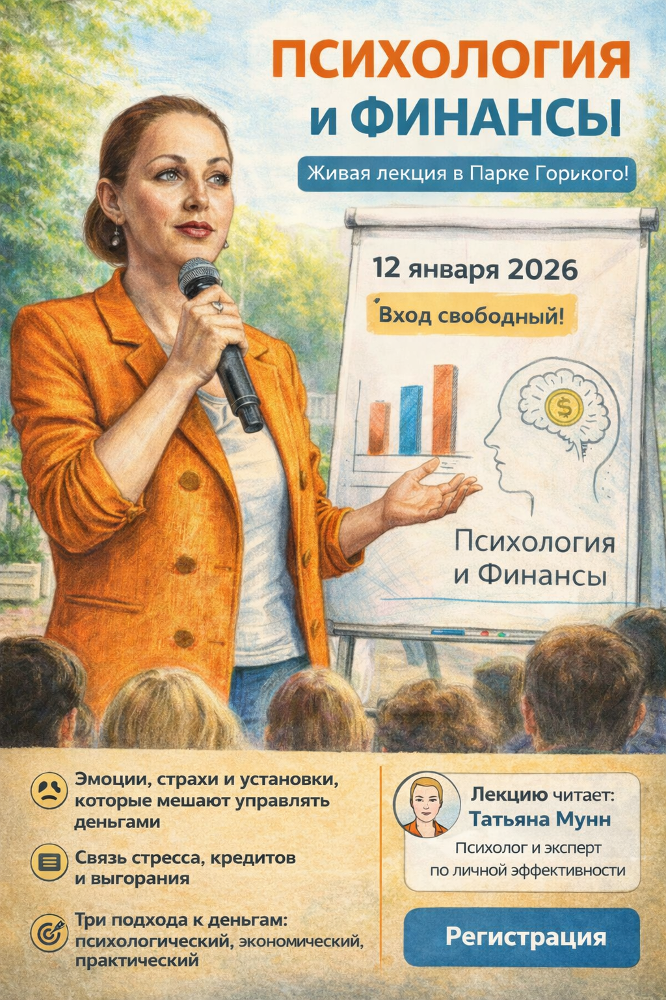

Публичный формат, где эмоциональный интеллект, переговорные навыки и психологическая устойчивость подаются через живую лекцию. Это важная часть сайта: показать не только институт как реестр, но и реального человека, который читает лекции в городе, университетах и на внешних площадках.

Короткое живое видео и реальные материалы добавлены в карточку события, чтобы страница показывала не только маршрут регистрации, но и саму лекционную практику Татьяны Мунн.
Лекторий Парка Горького с открытой регистрацией через Timepad и институтский follow-up.
Татьяна Мунн / Татьяна Михайловна Кумскова — практикующий психолог и автор образовательных программ по эмоциональному интеллекту.
Открытая регистрация, быстрый вход через Timepad и переход к смежным лекциям и программам.
Материалы, ссылки на следующие выступления и персональный маршрут в курс ЭИ.